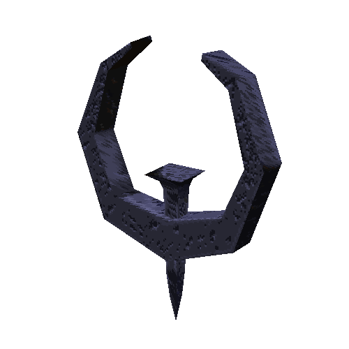

IceQuake


Last updated: 8/8/2018 by yoshi295295
If you don't have a copy you can either get it off of eBay or a abandonware site or you can download a fresh install from here.
If you want to install from CD/ISO, run demo32.exe and select QIII.DBD. Then install it normally.
Be sure to patch Quake 3 to 1.32. You can get the patch from here.
Now for the source port.
Download quake3-1.32e from here: http://www.edawn-mod.org/binaries/quake3-1.32e.zip Then extract it and open the folder. Drag the 32-bit/64-bit exe (depending on what version of Windows you have) into the Quake 3 folder and open it. You should be playing Quake 3 now.
Here is a CD key if you need one: w7ww22cs7gl3222r